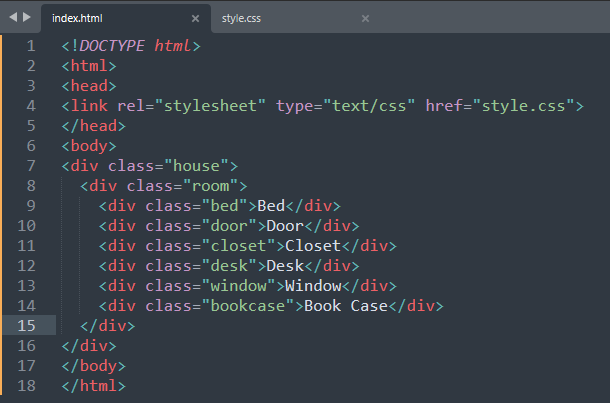
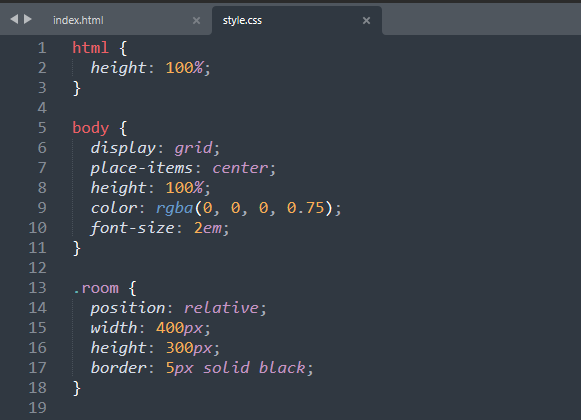
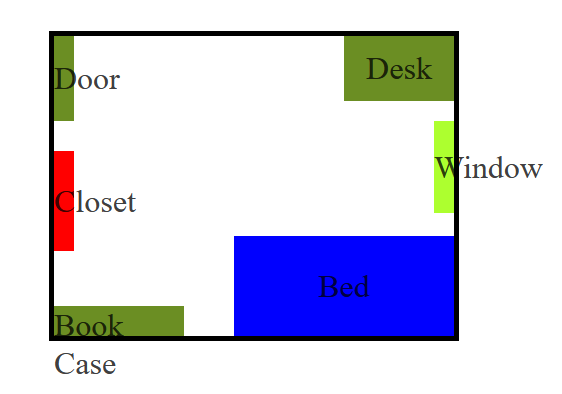
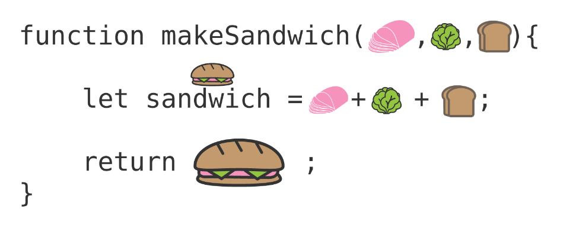
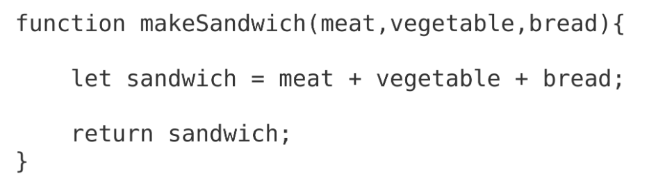
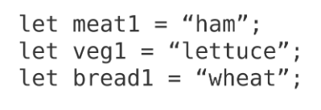
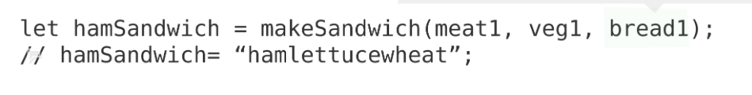
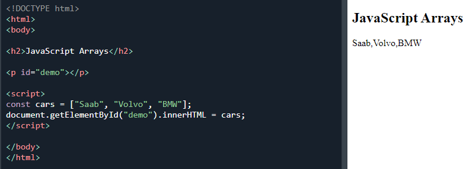
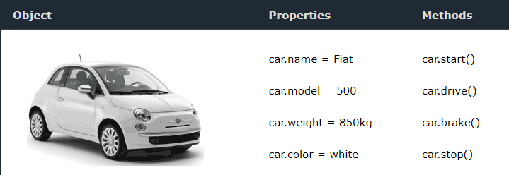
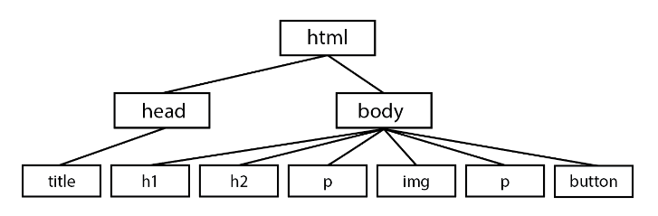

A little story before I start talking about JavaScript, I gotta say I got stucked in the rabit hole, instead of following just-time learning and complete only the learning competencies, I redo my blog and staying over the timebox so I am behind and learning all the information all at once is not a good idea.
I think I'm the only one here amongst the cohorts, so this is for you; future students, stick to the learning competencies, the timebox, spread out your learning, and last and not least take care of yourself, take break, get away from the screen, drink water regulary!
For this blog,I'll briefly cover JavaScript and as well as other components that makes up a website.
I - the basics
There are three main components that make up a website, JavaScript is one of them, JavaScript provides a functionality to the website, and among other things, the other two main components of a website include HTML, and CSS, and they're crucial, without each other, we'll have a boring website, we are very fortunate to live in era where technologies are in their prime, the early days of the web was very boring and not that engaging but it was a very poweful tool, and now with emerging technologies we can do even more with it.HTML stands for Hypertext Markup Language and it is the bedrock of a website that provide the content and structure of a website.
CSS stands for Cascading Stylesheets and as you may notice the keyword style there, this component provides and makes the appearance of a website to pop, like allowing to style colours for paragraphs, instead of a plain black and white. It also allow you to place your contents anywhere you like on a website.
II - analogy
Since most of us are blessed with a home or an apartment to live in, let's use that as an analogy. For an example, I currently live in a house that include : One living room, One kitchen, One toliet, One bathroom and Two bedrooms.
Everyone have preferences for what their house should look like, let's break this down a little further into their components:
- Content and Structure : the bedrock of the house is HTML; the structure where the house is laid on, the walls, floors, ceilings, the foundation piles, frames, and so on. While for contents, we may have TV or no TV, beds, the dinning table, chairs, the sofas, and appliances that we placed in the house.
- Aesthetic : this is the appearance of the house, the colour for the walls, the doors, types of floors, how wide or long the toliet, bathroom, the living room, the bedrooms should be, and whether should be place the bed by the window, and so on.
- Functionality : a modern house include power, gas, water, and internet, these entities are an example of a JavaScript that allows you to press the switch on and off for the light, and so on.
HTML example
HTML code for my house would look like below:
<house>
<living-room></living-room>
<kitchen></kitchen>
<bedroom></bedroom>
<bedroom></bedroom>
<bathroom></bathroom>
<toilet></toilet>
</house>
The house and it's properties inside the angled brackets
<
house
>
are known as a tag or tags.
Inside the
<
house
>
tag, there is:
one living room, one kitchen, two bedrooms, one bathroom,
and one toilet.
In HTML, tag or tags are predefiend, such as:
-
<p>tag - this defines a paragraph. -
<ol>tag - this defines an ordered list. -
<h1>to<h6>tags - these are used for the headings. -
<img>tag - is used for images - the image tag required two attributes: src - it's a path to the image, and the alt - it's an alternate text for the image in case the image can't be displayed. -
<div>tag - is used to divides a section in the HTML document, usage of div includes:- storing HTML elements - the elements then can be styled with CSS or manipulated with JavaScript
- the tag can also be styled by using the class or id attribute
The p tag, the ol tag, the h1 tag, and img tag can be inside the div tag.
Example 2
HTML code for my bedroom would look like as follow:
CSS example
My room in CSS as follow:
The dot .room is a CSS class that sets the value and layout of my room (a website layout).
The data inside the curly brackets:
position - this set the layout of a website in a window, and relative means the size of the layout or room in our case will always be set to what we have defined. In our case, we've only defined the width and the height for it, width is set to 400px(pixels) while height is set to 300px(pixels).
border - this set the thickness of the border and set its colour to solid black.
For the rull CSS code, please visit the following:
Image#1 | Image#2Output
The following is the output after I linked the CSS file to HTML
JavaScript
Having a home and accessories in a house is pretty good but it's much better with JavaScript. HTML and CSS are not dynamic, they're static, once a website is loaded there's nothing much you can do but with JavaScript you can do a lot of interactive things - for example in our house analogy we can turn on the oven, the stove when we want to cook something or when it's dark, we can switch the light on or off, and when we need to take shower, we can turn on the switch, and we can adjust whether it'll be cold or warm. JavaScript allows us to do more than that, it allows us to manipulate and change HTML and CSS a page on the fly, such as the DOM, which I've covered below.
Source:
- Zell – The difference between HTML, CSS, and JavaScript.
What is Control Flow?
Control Flow is a process that allows a code to executes but normally code executes from a top-down approach, and sometimes the process can be interrupted by other process structures, and in programming or scripting languages, those conditions include:
- Loops
- Conditionals
- Functions
In this post, we'll be only covering loops and functions as they are the main components for us to manipulate HTML and CSS and they provide us a better way to work in web-development.
Loops
Loops are a conditional programming statement that will repeats what the user throws at them until the user condition is met. Loop statements are also recognized as iteration statements by the dev community.
The are three types of loops: For , While and Do while
for loop is one of the widely used loop structure among programming languages, instead of rewriting a sequence multiple times, with loop, you can run write a sequence once and repeats the process until the condition is met.
I love tea so an example of making a tea would be as follow:
- Grab a cup
- Fill the kettle with water
- Switch on the power switch
- Put the kettle on a base
- Turn the on switch on the kettle
- Boil the water in the kettle
- Pour some of the boiled water into the cup
- Add milk or Don't add milk to the cup (I sometimes do add milk)
- Add sugar or Don't add sugar to the cup (no suger for me)
- Stir the tea, if sugar or milk is added
- Drink the tea
Some of the steps need to be in a sequential order but some of the other steps can be change vice versa.
Source:
- Code Institute – Control Flow in JavaScript.
What is a Function?
Just like we're making tea, we're going to make a sandwhich with the function. In any of the programming languages,functions are part of the critical components, but it can be hard to understand without other prior programming knowledge. I am still grapsing my mind around it but I'll try to explain it as much as I can.
With any sort of food; like a Sandwich for an example, we need:
- a specific set of ingredients.
- to perform a specific procedure using those ingredients
- finally after all of that we get the final product; the sandwhich
Like any other recipe, it can be reuse over and over again on a set of ingredients, this can be apply to a function as well.
These ingredients in function are called parameters. See example 1.
Example 1 - Visual Ingredients/Parameters
In the diagram, a declaration is made to declare makeSandwich function, the return for this is a full sandwich, some functions return a value, and other functions do not, that is because there's no new product to be return, rather we change a value that already existed in the script, and rerun it in a new format, when we are declaring a function we basically recording the recipe on how to make a sandwich.
Now, let's make some sandwich!
Creating a Ham Sandwich
In order to create or return a complete sandwich, we need to do three things.
- We need to declare a function
- We need to store the value of the sandwich
- We need to call or return the completed sandwich
I - Declaring a Function
In this plain text or string example, we're creating a makeSandwich function that take three parameters:
A meat, a vegetable and bread, that produce a sandwich or sandwiches.
II - Create and Store Variables
We create new variables to store the final sandwich, the parameters will still be the same, there's still be meat, vegetable, and bread, and as mentioned earlier the return value won't be the same because we can make a variation of sandwiches with the three ingredients and reuse it over and over again - ham sandwich, tuna sandwich, and chicken sandwich etc.
In the diagram, the variable meat1 holds a string of value of Ham, etc.
III - Call Function
Finally, the last step, we are calling the sandwich, and we're using the variables(meat1, veg1, bread1) as arguments (ham, lettuce, wheat). In the figure below, we're calling the makeSandwich function and store the result in hamSandwich.
Why Functions are useful?
They allow you to create one set of function of paramenters, and allows you to reuse this again and again, so you don't have to retype the code again. Just like we can make all types of sandwhich from one function declaration makeSandwich.
Source:
- CodeAnalogies – JavaScript Functions Explained by Making a Recipe [Interactive Explanation].
Arrays and Objects
What is an Arrays?
According to W3Schools, an array is a unique variable that hold more than one value. So, instead of creating mulitple single car, we can create one variable name cars and store many values in it.
And if we need to search through 500 cars, we can do that by using the index number. Index number start counting from zero[0], car number would be under index[0].
What are Objects?
A real world example of an object is a car. The make, model, the colour, and weight of a car is known as properties. While the ability to start, drive, break and stop are known as Methods.
Source:
What is the DOM?
DOM stands for The Document Object Model, it is a programming interface for HTML and represents an entire HTML document as a single object, the DOM allow us to access and manipulate the contents of the HTML document with JavaScript.
- the ability to add/change/remove HTML elements
- the ability to add/change/remove HTML attributes
- the ability to add/change/remove CSS styles
- the ability to react to HTML events
- the ability to add/change/remove HTML events
Everytime an HTML document (i.e home.html) get loaded on the internet browser, it becomes a document object. The document object is the great-great-great-grandparent of the HTML document.
The objects in the HTML document is group together in a logical, hierarchical way, like a tree.
In the figure above, the head element has 1 child element, while the body element has 6 child elements.
How to interact with it:
We can interect with the DOM by accessing the browser developer tools (F12 on Windows), we can find HTML elements by id, tag name, class name, CSS selectors, and object collections.
Source:
- W3Schools - What is the HTML DOM?
- DigitalOcean - Introduction to the DOM